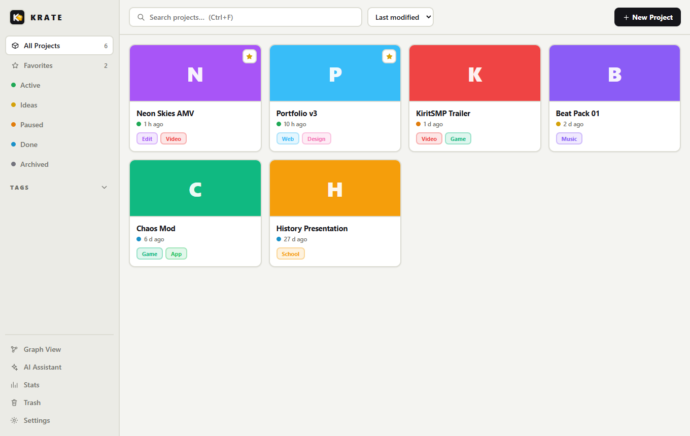
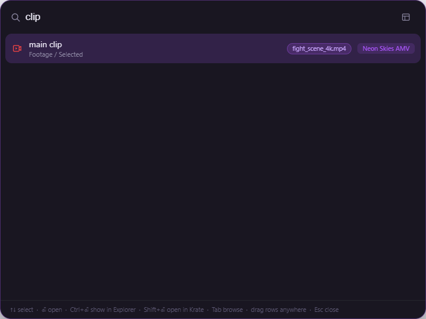
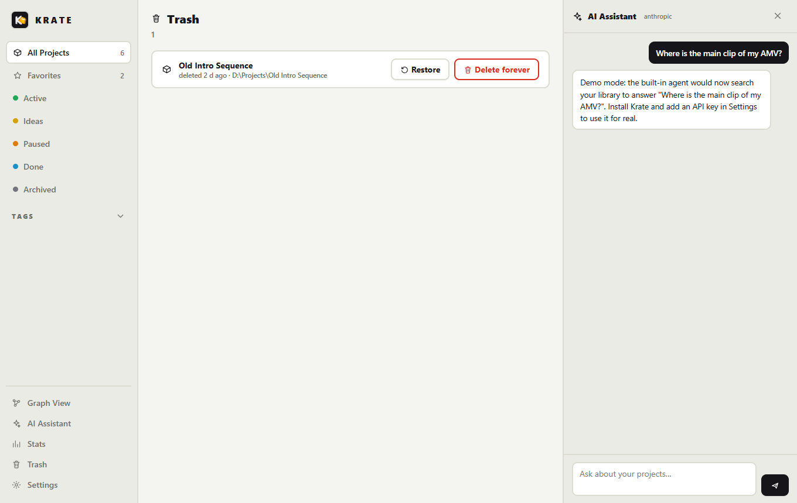
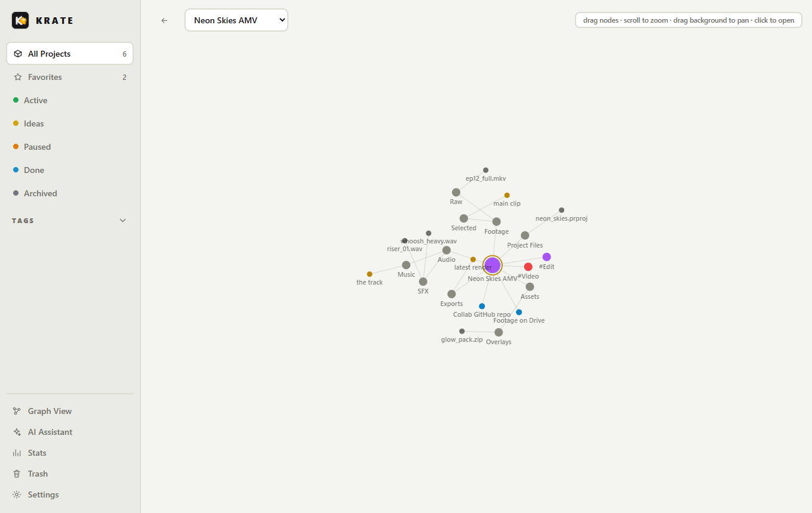

Krate is a local-first project organizer for Windows. Tag your projects, template their folder structure and nickname the files that matter. Then pull any of them up from anywhere with one hotkey, see them as a graph, or ask the built-in AI agent.

Edits, apps, designs, beats, school stuff. Every project is a normal folder on your disk, organized by Krate.
Press Ctrl+Alt+K in any app. A compact bar opens, searches project names, file names and your nicknames at once, and expands as results come in. Hit Tab to browse your folder structure instead, or Ctrl+Space to ask the AI.


The AI panel lives inside Krate, like in your code editor. Ask where something is, what a project contains or which files belong together. The agent uses real tools: it lists your projects, runs searches and reads text files before it answers.
Flip to Graph View and Krate lays out projects, tags, folders, files and links as an interactive graph. The full structure of every project is in there, not just the names.

White with black accents by default. Click a card and this page switches with it. The app works the same way, plus any accent color you like.
Everything Krate knows about a project lives inside the project folder itself. Portable, syncable, yours.
MyProject/ ├─ krate.json title, tags, notes, links, nicknames ├─ .krate/ cover image └─ your files, exactly as you put them
Windows 10/11 · free and open source
Prefer building from source? git clone, then npm install and npm start.